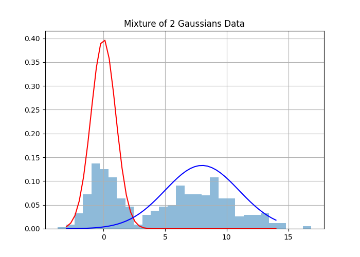
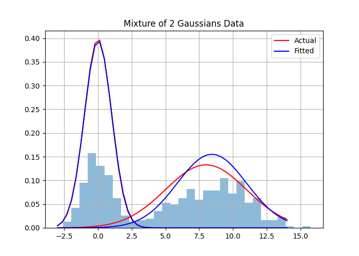
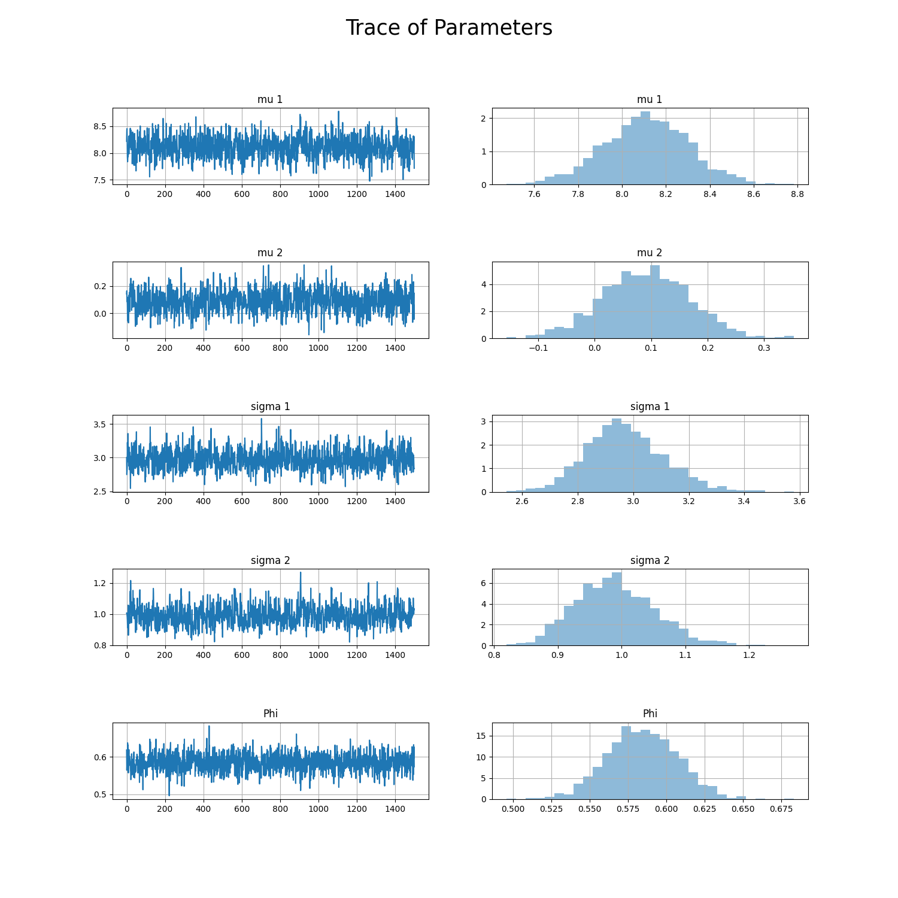

Gibbs Sampling for Mixutre of Normals
Gibbs Sampling
Gibbs sampling is a Markov Chain Monte Carlo method for sampling from a posterior distribution usually defined as \(p(\theta|data)\). The idea behind the Gibbs Sampler is to sweep through each one of the parameters and sample from their conditional distributions, fixing the other parameters constant. For example, consider the random variables \(X_1, X_2, X_3\) and assume that I can write out the analytic form of \(p(X_1|X_2,X_3), p(X_2|X_1,X_3), p(X_3|X_2,X_1)\) . We start by initializing \(x_{1,t}, x_{2,t}, x_{3,t}\) and for each iteration \(t\) we sample \(p(X_{1,t+1}|X_{2,t},X_{3,t})\), \(p(X_{2,t+1}|X_{1,t+1},X_{3,t})\), and \(p(X_{3,t+1}|X_{2,t+1},X_{3,t+1})\). This process can then continue until convergence. Algorithm 1 details a general Gibbs Sampler.
\begin{algorithm}
\caption{Gibbs Sampling}
\begin{algorithmic}
\STATE initialize $x_0 \sim q(x)$
\FOR{$i = 1, 2, ...$}
\STATE $x_{1,i} \sim p(X_1 = x_1 | X_2 = x_{2,i-1}, X_3 = x_{3,i-1}, ..., X_k = x_{k,i-1})$
\STATE $x_{2,i} \sim p(X_2 = x_2 | X_1 = x_{1,i}, X_3 = x_{3,i-1}, ..., X_k = x_{k,i-1})$
\STATE $x_{3,i} \sim p(X_3 = x_3 | X_1 = x_{1,i}, X_2 = x_{2,i}, ..., X_k = x_{k,i-1})$
\ENDFOR
\end{algorithmic}
\end{algorithm}
Mixture of Normals
Now that we understand the ideas behind Gibbs Sampling, let’s determine how we can use it to fit a mixture of 2 univariate gaussians. Our model is defined by \(p(x|\theta) = \pi\phi_{\theta_i}(x) + (1-\pi)\phi_{\theta_2}(x)\). This just means that we have some probability \(\pi\) of taking our observation from \(\phi_{\theta_1}(x)\) where \[\phi_{\theta_1}(x) \sim N(\mu_1, \sigma^2_1)\] and \((1-\pi)\) probability of coming from \(\phi_{\theta_2}(x)\) where \(\phi_{\theta_2}(x) \sim N(\mu_2, \sigma^2_2)\). Using python we can show this as follows:
import numpy as np
from numpy.random import binomial, normal, beta, multinomial
import scipy.stats as st
from scipy.stats import invgamma, norm
import matplotlib.pyplot as plt
from distcan import InverseGamma
def data_gen(mu, sigmas, phi, n):
"""
Generates samples from Mixture of 2 Gaussian Distributions
"""
y = []
for i in range(n):
ind = binomial(1, phi, 1)
if ind == 1:
y.append(norm(mu[0], sigmas[0]).rvs())
else:
y.append(norm(mu[1], sigmas[1]).rvs())
return np.array(y)
# Set Starting Parameters
mu = [0, 8]
sigmas = [1, 3]
phi = .4
n = 500
y = data_gen(mu=mu, sigmas=sigmas, phi=phi, n=n)
x = np.linspace(-3,14)
# Create Plot of Data
plt.hist(y, 30, density=True, alpha=0.5);
plt.plot(x, norm(mu[0], sigmas[0]).pdf(x), color="red")
plt.plot(x, norm(mu[1], sigmas[1]).pdf(x), color="blue")
plt.title("Mixture of 2 Gaussians Data")
plt.grid()
plt.savefig("gauss_mixtures.png")
plt.close()
It can be very difficult to calculate the posterior under conjugate priors for a normal mixture model, so instead we can use a \({0,1}\) indicator variable \(Z\) to make the calculations easier.
If we let \(\theta_j = \\{\mu_j,\sigma^2_j,\pi\\}\) we see that the joint density \[p(x, z; \theta) = p(x|z;\theta) p(z;\theta)\] where \[p(x|z;\theta) = \phi_{\theta_1}(x)^{z_1}\phi_{\theta_2}(x)^{z_2}\] and \(p(z;\theta)\) comes from the multinomial distribution with density \(\frac{n!}{x_1!x_2!}\pi_1^{z_1}\pi^{z_2}\). Because \(z\) is an indicator variable, \(\frac{n!}{x_1!x_2!} = 1\) so our second term is given by:
\[ \begin{align*} p(z;\theta) & = \pi^{z_1}(1-\pi)^{z_2}\\ p(z;\theta) & = \prod_{j=1}^K\pi_j^{z_j} \end{align*} \]
Which gives the full data likelihood:
\[p(x, z; \theta) = \prod_{i=1}^N\left[\pi\phi_{\theta_1}(x_i)\right]^{z_1}\left[(1-\pi)\phi_{\theta_2}(x_i)\right]^{z_2}\]
We can now define our prior distributions. We’ll use conjugate priors because they allow us to easily compute posterior distributions. We should also point out that the choice of prior hyper parameters can make our calculations easier as well. We define our priors over \(\{\mu_j,\sigma^2_j,\pi\}\) as follows:
\[ \begin{align*} p(\pi) & \sim Beta(\alpha = 1, \beta = 1)\\ p(\mu_j) & \sim N(\mu_0 = 0, \tau^2 = 1)\\ p(\sigma_j^2) & \sim IG(\delta = 1, \psi = 1) \end{align*} \]
Plugging our hyperparameters directly into our densities we get the following prior distributions:
\[ \begin{align*} p(\pi|\alpha,\beta) & = \pi^{\alpha-1}(1-\pi)^{\beta-1}\\ & \propto const\\ p(\mu_j|\mu_0,\tau^2) & = \frac{1}{\sqrt{2\pi}}\exp\left[-\frac{(\mu_j - \mu_0)^2}{2\tau^2}\right]\\ & \propto \exp\left[-\frac{\mu_j^2}{2}\right]\\ p(\sigma_j^2|\delta, \psi) & = \left(\sigma^2_j\right)^{-\delta - 1}\exp\left[-\frac{\psi}{\sigma^2_j}\right]\\ & \propto \left(\sigma^2_j\right)^{-2}\exp\left[-\frac{1}{\sigma^2_j}\right] \end{align*} \]
Which leads to the posterior distribution over \(\theta\):
\[ \begin{align*} p(\theta|x,z) & \propto p(x, z| \theta)p(\pi)\prod_{j=1}^k\left[p(\mu_j)p(\sigma_j^2)\right]\\ & \propto \prod_{i=1}^N\pi^{z_1}\phi_{\theta_1}(x_i)^{z_1}\prod_{i=1}^N(1-\pi)^{z_1}\phi_{\theta_2}(x_i)^{z_2}\prod_{j=1}^k\left[p(\mu_j)p(\sigma_j^2)\right]\\ & \propto \prod_{i=1}^N\pi^{z_1}\prod_{i=1}^N\pi^{z_2}\prod_{i=1}^N\phi_{\theta_1}(x_i)^{z_1}\prod_{i=1}^N\phi_{\theta_2}(x_i)^{z_2}\prod_{j=1}^K\exp\left[-\frac{\mu_j^2}{2}\right]\left(\sigma^2_j\right)^{-2}\exp\left[-\frac{1}{\sigma^2_j}\right]\\ & \propto \pi^{\sum_{i=1}^Nz_1}(1-\pi)^{\sum_{i=1}^Nz_2}\prod_{i=1}^N\prod_{j=1}^K\phi_{\theta_j}(x_i)^{z_j}\prod_{j=1}^K\exp\left[-\frac{\mu_j^2}{2}\right]\left(\sigma^2_j\right)^{-2}\exp\left[-\frac{1}{\sigma^2_j}\right]\\ \end{align*} \]
Now that we can isolate our variables to solve for the complete conditionals. The easiest to see is the complete conditional for \(\pi\).
\[ \begin{align*} p(\pi|x, z) & = \int_0^{\infty}\int_0^{\infty}p(\theta|x,z)d\mu d\sigma\\ & \propto \pi^{\sum_{i=1}^Nz_1 + 1 - 1}(1-\pi)^{\sum_{i=1}^Nz_2 + 1 - 1}\\ p(\pi|x, z) & \sim Beta\left(\sum_{i=1}^Nz_1 + 1, \sum_{i=1}^Nz_2 + 1\right) \end{align*} \]
def update_pi(N, n):
"""
Sample from Posterior Conditional for pi
"""
return beta(1+n, 1+(N-n))Similarly we can work out the complete conditional for \(\mu\).
\[ \begin{align*} p(\mu|x, z) & = \int_0^{\infty}\int_0^{\infty}p(\theta|x,z)d\pi d\sigma\\ & \propto \prod_{n=1}^N\prod_{j=1}^K\phi_{\theta_j}(x_i)^{z_j}\prod_{j=1}^K\exp\left[-\frac{\mu_j^2} {2}\right]\\ \end{align*} \]
We can stick with a singular instance of \(\mu\) to simplify this a bit and get rid of the product over \(K\) because we know that the calculation is going to be the same for all \(\mu\).
\[ \begin{align*} & \propto \prod_{n=1}^N\phi_{\theta_1}(x_i)^{z_1}\exp\left[-\frac{\mu_1^2}{2}\right]\\ & \propto \exp\left[-\frac{\sum_{i=1}^Nz_{i1}(x_i - \mu_1)^2}{2\sigma_j^2} - \frac{\mu_1^2}{2}\right]\\ & \propto \exp\left[-\frac{\sum_{i=1}^Nz_{i1}x_i^2 - 2\mu_1x_iz_{i1} + z_{i1}\mu_1^2}{2\sigma_j^2} - \frac{\mu_1^2}{2}\right]\\ p(\mu | x, z) & \propto \exp\left[-\frac{\sum_{i=1}^Nz_{i1}x_i^2 - 2\mu_1x_iz_{i1} + z_{i1}\mu_1^2 + \sigma^2_j\mu_j^2}{2\sigma_j^2}\right] \end{align*} \]
Now let \(\sum_{i=1}^Nz_{ij}x_i=\tilde{x_j}\) and \(\sum_{i=1}^Nz_{ij}=n_j\). We can also see that the first term \(\sum_{i=1}^Nz_{i1}x_i^2\) does not depend on \(\mu_j\) so this can be factored out and absorbed into the constant term. We’re going to need to complete the square here to isolate our normal parameters.
\[ \begin{align*} p(\mu | x, z) & \propto \exp\left[-\frac{2\tilde{x_j}\mu_j + (n_j + \sigma^2_j)\mu_j^2}{2\sigma_j^2}\right]\\ & \propto \exp\left[-(n_j + \sigma^2_j)\frac{\mu_j^2 + 2\left(\frac{\tilde{x_j}}{n_j + \sigma^2_j}\right)\mu_j - \left(\frac{\tilde{x_j}}{n_j + \sigma^2_j}\right)^2 + \left(\frac{\tilde{x_j}}{n_j + \sigma^2_j}\right)^2}{2\sigma_j^2}\right]\\ & \propto \exp\left[-(n_j + \sigma^2_j)\frac{\left(\mu_j - \frac{\tilde{x_j}}{n_j + \sigma^2_j}\right)^2}{2\sigma_j^2}\right]\\ p(\mu | x, z) & \sim N\left(\frac{\tilde{x_j}}{n_j + \sigma^2_j}, \frac{\sigma^2_j}{n_j + \sigma^2_j}\right) \end{align*} \]
Note that if we use the prior \[p(\mu_j|\mu_0,\tau^2) = N(0, \sigma^2_j)\] we get:
\[ \begin{align*} p(\mu | x, z) \sim N \left(\frac{\tilde{x_j}}{n_j + 1}, \frac{\sigma^2_j}{n_j + 1}\right)\\ \end{align*} \]
def update_mu(y, sigma):
"""
Sample from Posterior Conditional for mu
"""
n = len(y)
return normal(y.sum() / (n + 1), np.sqrt(sigma / (n + 1)))Moving on to \(\sigma^2\):
\[ \begin{align*} p(\mu|x, z) & = \int_0^{\infty}\int_0^{\infty}p(\theta|x,z)d\pi d\mu\\ & \propto \prod_{n=1}^N\prod_{j=1}^K\phi_{\theta_j}(x_i)^{z_j}\prod_{j=1}^K \left(\sigma^2_j\right)^{-2}\exp\left[-\frac{1}{\sigma^2_j}\right] \end{align*} \]
Again we can isolate to \(j=1\) knowing that it’s the same for all \(j\):
\[ \begin{align*} & \propto \prod_{n=1}^N\phi_{\theta_j}(x_i)^{z_j}\left(\sigma^2_j\right)^{-2}\exp\left[-\frac{1}{\sigma^2_j}\right]\\ & \propto \left(\sigma^2_j\right)^{-\frac{\left(\sum_{i=1}^Nz_{i,j}\right) -2 -2}{2}}\exp\left[-\frac{1}{\sigma^2_j}- \frac{\sum_{i=1}^N(x-\mu_j)^2}{2\sigma^2_j}\right]\\ & \propto \left(\sigma^2_j\right)^{-\left(\frac{1}{2}n_j + 1\right) - 1}\exp\left[\frac{1 + \frac{1}{2}\sum_{i=1}^N(x-\mu_j)^2}{\sigma^2_j}\right]\\ & \sim IG\left(\frac{1}{2}n_j + 1, 1 + \frac{1}{2}\sum_{i=1}^N(x-\mu_j)^2\right) \end{align*} \]
def update_sigma(y, mu):
"""
Sample from Posterior Conditional for sigma
"""
alpha = (0.5 * len(y)) + 1
beta = (0.5 * np.square(y - mu).sum()) + 1
return InverseGamma(alpha, beta).rvs()Next we get the updates for each \(z_{i,j}\) simply using the rules of conditional probabilities:
\[ \begin{align*} p(z|\theta,x) & = \frac{p(\theta,x,z)}{p(\theta,x)} \\ & = \frac{p(x|z,\theta)p(z|\theta)p(\theta)}{p(x|\theta)p(\theta)} \\ & = \frac{p(x|z,\theta)p(z|\theta)}{p(x|\theta)} \\ & = \frac{\pi_j\phi_{\theta_1}(x_i)}{\sum_{j=1}^K\pi_j\phi_{\theta_j}(x_i)} \end{align*} \]
def update_z(data: list, mu, sigma, pi):
"""
Sample from latent variable Z according to likelihoods for class assignment
"""
a = norm(mu[0], np.sqrt(sigma[0])).pdf(data) * pi
b = norm(mu[1], np.sqrt(sigma[1])).pdf(data) * pi
pi_i = a / (a + b)
return binomial(1, pi_i)Finally, lets define our Gibbs Algorithm to fit our parameters to the data we generated earlier. Then we can extract our fitted params and see how well we fit the data.
def gibbs(data, iters, burnin):
"""
Run Gibb's Sampling for Mixture of 2 Gaussians. Initial States are sample from Priors
"""
# Set initial guesses based on priors
mu = normal(0, 1, size=2)
pi = beta(1,1)
sigma = InverseGamma(1,1).rvs(size=2)
out = np.empty((iters, 5))
for i in range(iters):
# Update Parameters according to conditional posterior distributions
z1 = update_z(data, mu, sigma, pi)
pi = update_pi(len(data), len(data[z1==1]))
mu[0] = update_mu(data[z1 == 1], sigma[0])
mu[1] = update_mu(data[z1 == 0], sigma[1])
sigma[0] = update_sigma(data[z1 == 1], mu[0])
sigma[1] = update_sigma(data[z1 == 0], mu[1])
# Store Values to monitor trace
out[i, 0:2] = mu
out[i, 2:4] = np.sqrt(sigma)
out[i, 4] = pi
return out[burnin:,:]
trace = gibbs(y, 2000, 500)
mu1 = np.round(np.mean(trace[:,0]),2)
mu2 = np.round(np.mean(trace[:,1]),2)
sigma1 = np.round(np.mean(trace[:,2]),2)
sigma2 = np.round(np.mean(trace[:,3]),2)
pi = np.round(np.mean(trace[:,4]),2)
plt.hist(y, 30, density=True, alpha=0.5);
plt.plot(x, norm(mu[0], sigmas[0]).pdf(x), color="red", label="Actual")
plt.plot(x, norm(mu[1], sigmas[1]).pdf(x), color="red")
plt.plot(x, norm(mu1, sigma1).pdf(x), color="blue", label="Fitted")
plt.plot(x, norm(mu2, sigma2).pdf(x), color="blue")
plt.title("Mixture of 2 Gaussians Data")
plt.legend(loc="upper right")
plt.grid()
plt.savefig("mixture_fitted.png")
And one of the largest benefits of fitting the parameters using bayesian methods is that we can plot the full posterior distributions over \(\theta\), giving us uncertainty in our fit as well as our point estimates. The full posteriors can be plotted as follows:
fig, axs = plt.subplots(5,2)
x = range(trace.shape[0])
params = ["mu 1", "mu 2", "sigma 1", "sigma 2", "Phi"]
for i, v in enumerate(params):
y = trace[:,i]
axs[i,0].plot(x, y)
axs[i,0].set_title(v)
axs[i,1].hist(y, 30, density=True, alpha=0.5)
axs[i,1].set_title(v)
axs[i,0].grid()
axs[i,1].grid()
fig.suptitle("Trace of Parameters", fontsize=25)
fig.set_figheight(15)
fig.set_figwidth(15)
fig.subplots_adjust(hspace=1)
fig.savefig("m2g_trace.png")